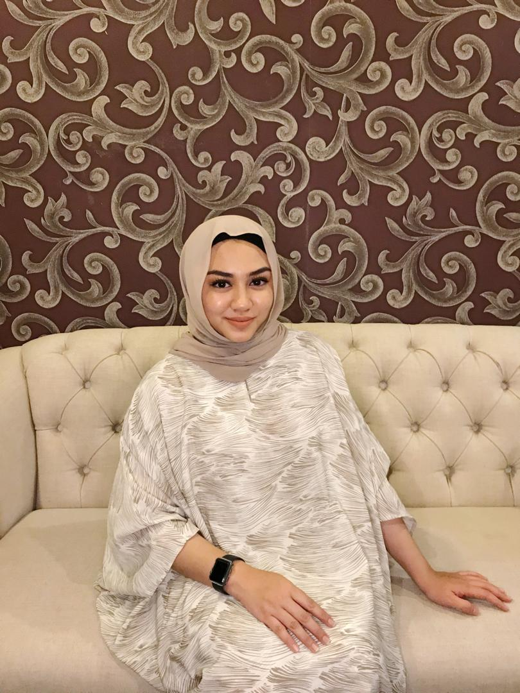

Biodata
|  | My name is Nuradzrisya Khalida binti Mohd Khalid. I was born on 4th January 1999, Selangor. I am the second daughter of 3 siblings. I am a fresh graduate of Diploma in Office Management and Technology from Uitm Jengka Pahang. During diploma year I have mastered the typing and microsoft skills. While waiting to further my degree, I have also mastered in baking and cooking. I lllooovvveeee to cook! and I llllllllloooooovvvvvvveeee to eat too! hihi. I eat all types of food, western and "masakan kampung". I like to cook spicy food like "ayam masak hijau", "ayam masak merah" ummm everything that comes with "sambal" hihi. When my mother cook for lunch or dinner, I always watch and learn like how she prepare the foods. |
|---|---|
| Aaaaaaannnnnnddddd when she's not around, she always ask me to cook any dishes that I know. Good or bad taste everyone must taste it :p I always watch cooking show on youtube. "Dapur bujang" is my favorite youtube channel! because the ingredient is so eeeeaaaayyyyeeeehhhh hihi I like to bake too! on weekend, when my aunty's have a lot of orders from customers, I went to her house to help her made any tradition "kuih', brownies, sandwiches and more! My sister also bake cakes, brownies and cream puff. but I am soOooOOooo lazy to clean up all the mess! Now I owned an online business called "thebakeriology" on instagram. Handling this business have thought me how to deal with customers, manage time to complete the order on time, design and decorating cakes. | |
 |
Here are the list of my key features F A M I L Y P E R S O N I love to put my family first in whatever situation because to me they are my everything whatever that i do. i will think of they first. Whenever i go they are always in my mind. They are my biggest supporter |
 |
G O O D L I S T E N E R I dont have a lot of friends but i know for sure the one that i have right now are real Besides i like to keep my circle small. I may be cant always be physically there everytime my friends need me but i always find a way to comfort them whenever they they need someone |
| F O O D H U N T E R I love to go to food hunting with my family, friends and my boyf....... hehe I like to try a new kind of food and also famous food! umm yah sometimes most of the famous food that i have tried is not actually that good but it is worth it since everyone talked about it Atleast i got to satisfy my feelings |
Next